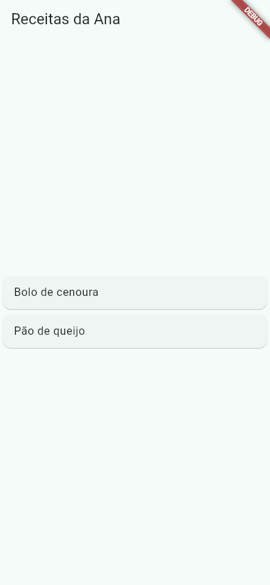

Flutter Novidades
O Flutter muda rápido: uma versão estável nova sai a cada três meses, mais ou menos, e no meio do caminho saem correções. Esta aula mostra como descobrir que versão você tem, onde ler o que mudou e o que mudou na versão usada neste guia, o Flutter 3.47, com o Dart 3.13. Você não precisa decorar nada daqui: a ideia é saber que essas coisas existem e onde procurar quando um tutorial antigo não bater com o que você vê.
- Como ver a versão do Flutter, do Dart e do DevTools com
flutter --version. - Como ler um número de versão (3.47.7) e o ritmo de lançamentos: estável trimestral + correções.
- Onde ficam as notas oficiais: o blog, as release notes, as breaking changes e o
CHANGELOG.md. - As novidades do 3.47 que mais afetam quem está começando.
- O atalho de ponto do Dart (
.center,.fromSeed), que já aparece no projeto que oflutter creategera.
A saída do flutter --version, os números do Android e o código gerado pelo flutter create foram conferidos no Flutter 3.47.7 da máquina da Ana. A lista de novidades resume o anúncio oficial What's new in Flutter 3.47 (12 de agosto de 2026) e o CHANGELOG.md do próprio Flutter. Quando sair uma versão nova, confira lá: esta página fala do 3.47.
A ideia: o celular que recebe atualização
O seu celular recebe, de vez em quando, uma atualização grande (Android 15, 16…) com novidades, e, no meio do caminho, atualizações pequenas de segurança que só consertam coisas. O Flutter funciona igual: a versão "grande" muda o segundo número (3.44 → 3.47), e as correções mudam o terceiro (3.47.0 → 3.47.7).
1. Que versão eu tenho?
$ flutter --version Flutter 3.47.7 • channel stable • https://github.com/flutter/flutter.git Framework • revision abaf9c5237 (11 days ago) • 2026-10-08 09:51:21 -0700 Engine • hash d8a2d6c768c334d53e16277f837970ffa1e2de81 (revision deb287481e) (12 days ago) • 2026-10-07 17:09:12.000Z Tools • Dart 3.13.5 • DevTools 2.60.0
- Flutter 3.47.7
- A versão. 3 é a geração (o Flutter 3 saiu em 2022 e todo este guia é sobre ele); 47 é a versão estável; 7 é a sétima correção dela.
- channel stable
- O canal:
stable("estável") é o que você deve usar. Existe também obeta, para quem quer testar as novidades antes. - Framework • revision … • 2026-10-08
- A versão exata do código do framework (os widgets), com a data.
- Engine • hash …
- A versão exata do motor (o C++ que desenha na tela).
- Tools • Dart 3.13.5 • DevTools 2.60.0
- O Flutter vem com o Dart e o DevTools dentro. Você não instala o Dart separado: ele vem junto, na versão certa.
Para atualizar, flutter upgrade baixa a versão mais nova do seu canal. Antes de atualizar um projeto importante, leia as notas da versão (a próxima seção).
2. Onde ler o que mudou
| Fonte | O que tem | Quando ler |
|---|---|---|
| Blog "What's new in Flutter 3.47" | As novidades principais, explicadas, com imagens | Logo que sai uma versão estável |
| Release notes (docs.flutter.dev/release/release-notes) | A lista completa do que entrou | Quando procura algo específico |
| Breaking changes (docs.flutter.dev/release/breaking-changes) | O que quebra código antigo, e como migrar | Antes de atualizar um projeto |
CHANGELOG.md (no repositório do Flutter) | As correções de cada 3.47.x | Quando um bug some ou aparece depois de um flutter upgrade |
O CHANGELOG.md vem dentro da pasta onde o Flutter foi instalado. O começo da parte do 3.47, na máquina da Ana:
## Flutter 3.47 Changes ### [3.47.7](https://github.com/flutter/flutter/releases/tag/3.47.7) - [flutter/182604](https://github.com/flutter/flutter/issues/182604) When an OverlayPortal is displayed on iOS, accessibility frames are shrunk by the device pixel ratio and anchored to the top-left, so VoiceOver focus and XCUITest taps miss the visible controls. - [flutter/100946](https://github.com/flutter/flutter/issues/100946) When using VoiceOver on iOS with a ReorderableListView, Semantics focus is incorrectly shifted to the top left of the screen. ### [3.47.6](https://github.com/flutter/flutter/releases/tag/3.47.6) - [flutter/192513](https://github.com/flutter/flutter/issues/192513) Fixed an issue that caused Windows production apps to hang.
Cada linha é um defeito consertado, com o número do issue (o pedido no GitHub). Por exemplo, o 3.47.7 corrigiu o leitor de tela do iPhone (VoiceOver), que tocava no lugar errado em certas telas; o 3.47.6 corrigiu apps de Windows que travavam. Viu? Correções, nenhuma novidade grande: é para isso que servem os números do fim.
3. O que mudou no Flutter 3.47
Segundo o anúncio oficial, as novidades que mais tocam quem está começando são estas:
3.1 Material e Cupertino como pacotes separados
Os widgets do Material (os que você usa neste guia: Scaffold, AppBar, ElevatedButton…) e os do Cupertino (o visual de iPhone) ganharam versões 1.0 como pacotes à parte no pub.dev: material_ui e cupertino_ui. A vantagem: eles podem receber correções e componentes novos toda semana, sem esperar uma versão nova do Flutter. A adoção é opcional no 3.47: o import 'package:flutter/material.dart'; que você usa continua funcionando. O anúncio diz que as bibliotecas de design embutidas devem ser marcadas como obsoletas (deprecated) na versão estável de novembro, e oferece uma migração automática com dart fix --apply --code=migrate_design_widgets.
Os exemplos usam package:flutter/material.dart, que é o que o flutter create do 3.47 ainda gera. Quando a troca virar o padrão, o código dos widgets continua o mesmo; muda o import e o pubspec.yaml.
3.2 Android: API 36 e mínimo Android 7
Os valores padrão do projeto subiram: compileSdkVersion e targetSdkVersion 36, e minSdkVersion 24 (Android 7.0). Na máquina da Ana, o Flutter 3.47.7 traz exatamente compileSdkVersion: Int = 36, minSdkVersion: Int = 24 e targetSdkVersion: Int = 36, e o projeto novo vem com Gradle 9.3.1 e Kotlin 2.4.0. As ferramentas pedem Java 17 ou mais novo. Detalhes em Gerando o APK.
3.3 iPhone e Mac: iOS 15 e macOS 12
Para se preparar para o Xcode 27, o mínimo subiu de iOS 13 para iOS 15, e de macOS 10.15 para macOS 12. Apps compilados com o Xcode 27 precisam adotar o UIScene; a ferramenta do Flutter migra a maioria dos projetos sozinha. O Swift Package Manager substitui aos poucos o CocoaPods (que entrou em modo de manutenção). Mais em iOS, Web e Desktop.
3.4 Desktop: Impeller por padrão
O Impeller, o motor gráfico novo do Flutter, virou o padrão também no Windows, no macOS e no Linux, com texto desenhado de um jeito mais nítido (SDF). Quando a Ana rodou o app no Linux, o próprio terminal avisou:
$ flutter run -d linux … [IMPORTANT:flutter/shell/platform/embedder/embedder_surface_gl_impeller.cc(126)] Using the Impeller rendering backend (OpenGLESSDF).
"Usando o motor de desenho Impeller (OpenGLES com SDF)." O desktop também ganhou janelas múltiplas experimentais e flavors (--flavor) no Windows e no Linux.
3.5 Web: WebAssembly
A web pode ser compilada para WebAssembly (Wasm), que costuma rodar mais rápido: flutter build web --release --wasm. Para isso o app (e os pacotes) precisam usar o package:web no lugar do antigo dart:html.
3.6 Widget Previews estável
As prévias de widget (Widget Previews) saíram do modo experimental: você marca um widget e vê como ele fica, no editor, sem rodar o app inteiro.
3.7 Pequenas melhorias nos widgets
ImageIconganhouuseOriginalColors(mostrar o ícone com as cores originais da imagem).AnimatedCrossFadeganhou controle de recorte (clip).- No Android, o app percebe sozinho o alto contraste e as cores invertidas das opções de acessibilidade (
MediaQueryData.highContrasteinvertColors).
4. O atalho de ponto do Dart
Esta não é do Flutter 3.47, é do Dart (os dot shorthands chegaram no Dart 3.10), mas você vai topar com ela logo no primeiro projeto: o main.dart que o flutter create do 3.47.7 gera já usa. Olhe o tema do app de exemplo, como saiu do flutter create:
theme: ThemeData(
colorScheme: .fromSeed(seedColor: Colors.deepPurple),
),
Onde foi parar o ColorScheme? Quando o Dart já sabe o tipo esperado (o parâmetro colorScheme é um ColorScheme), você pode começar direto pelo ponto. As duas linhas abaixo são a mesma coisa:
colorScheme: ColorScheme.fromSeed(seedColor: Colors.teal), // forma completa colorScheme: .fromSeed(seedColor: Colors.teal), // atalho de ponto
Vale para valores de enum também: mainAxisAlignment: MainAxisAlignment.center pode virar mainAxisAlignment: .center. O app de receitas da Ana, escrito com atalhos:
import 'package:flutter/material.dart';
void main() => runApp(const AppReceitas());
class AppReceitas extends StatelessWidget {
const AppReceitas({super.key});
@override
Widget build(BuildContext context) {
return MaterialApp(
theme: ThemeData(
colorScheme: .fromSeed(seedColor: Colors.teal),
),
home: Scaffold(
appBar: AppBar(title: const Text('Receitas da Ana')),
body: const Column(
mainAxisAlignment: .center,
crossAxisAlignment: .stretch,
children: [
Card(child: ListTile(title: Text('Bolo de cenoura'))),
Card(child: ListTile(title: Text('Pão de queijo'))),
],
),
),
);
}
}

.center), esticados na largura (.stretch), e as cores tiradas do verde-azulado (.fromSeed com Colors.teal). Flutter 3.47.7, modo debug.Qual usar? Os dois funcionam e o resultado é idêntico. A forma completa é mais clara para quem está aprendendo (você vê de onde vem o .center), e por isso a maioria das aulas deste guia a usa. O atalho é mais curto e aparece cada vez mais em código novo; agora você sabe ler.
Missão: usando o atalho de ponto, troque o mainAxisAlignment da Column para .end e veja os cartões irem para o pé da tela.
import 'package:flutter/material.dart';
void main() => runApp(const AppReceitas());
class AppReceitas extends StatelessWidget {
const AppReceitas({super.key});
@override
Widget build(BuildContext context) {
return MaterialApp(
theme: ThemeData(
colorScheme: .fromSeed(seedColor: Colors.teal),
),
home: Scaffold(
appBar: AppBar(title: const Text('Receitas da Ana')),
body: const Column(
mainAxisAlignment: .center,
crossAxisAlignment: .stretch,
children: [
Card(child: ListTile(title: Text('Bolo de cenoura'))),
Card(child: ListTile(title: Text('Pão de queijo'))),
],
),
),
);
}
}
import 'package:flutter/material.dart';
void main() => runApp(const AppReceitas());
class AppReceitas extends StatelessWidget {
const AppReceitas({super.key});
@override
Widget build(BuildContext context) {
return MaterialApp(
theme: ThemeData(
colorScheme: .fromSeed(seedColor: Colors.teal),
),
home: Scaffold(
appBar: AppBar(title: const Text('Receitas da Ana')),
body: const Column(
mainAxisAlignment: .end,
crossAxisAlignment: .stretch,
children: [
Card(child: ListTile(title: Text('Bolo de cenoura'))),
Card(child: ListTile(title: Text('Pão de queijo'))),
],
),
),
);
}
}
Quando dá errado
Você copia um exemplo de um vídeo de 2021 e aparecem avisos de coisa obsoleta (deprecated), ou erros de parâmetro que não existe. Quase sempre o tutorial é de uma versão velha. Como resolver: confira a versão com flutter --version, procure o nome do widget ou parâmetro na página de breaking changes e use o dart fix --apply, que conserta automaticamente muitas dessas mudanças.
Versões novas sobem as exigências (no 3.47: Gradle 9, Kotlin 2.4, Java 17, minSdk 24). Um projeto criado com um Flutter antigo pode trazer números velhos nos arquivos da pasta android/. Como resolver: leia a mensagem (ela costuma dizer a versão mínima), confira as breaking changes da versão e, num projeto pequeno, compare com um projeto novo de flutter create.
O .center só funciona onde o Dart sabe o tipo esperado, como num parâmetro. Numa variável sem tipo (var alinhamento = .center;) ele não tem como adivinhar de qual classe é o center. E projetos com SDK do Dart anterior ao 3.10 no pubspec.yaml não aceitam o atalho. Como resolver: escreva a forma completa, MainAxisAlignment.center.
Referência
| Comando / lugar | Para que serve |
|---|---|
flutter --version | Versão do Flutter, do Dart e do DevTools |
flutter upgrade | Atualiza para a versão mais nova do canal |
flutter channel | Mostra ou troca o canal (stable, beta) |
dart fix --apply | Aplica as migrações automáticas no projeto |
| docs.flutter.dev/release/release-notes | Notas de cada versão |
| docs.flutter.dev/release/breaking-changes | O que quebra e como migrar |
Exercícios
1. Lendo a versão
Na versão 3.47.7, qual número conta as correções? Responda com o número.
2. O comando
Complete o comando que mostra a versão instalada:
3. Qual linha é o mesmo que mainAxisAlignment: MainAxisAlignment.center?
4. Antes de atualizar o Flutter de um projeto importante, que página oficial você lê para saber o que pode quebrar?
5. No Flutter 3.47, qual é o minSdkVersion padrão de um projeto Android novo?
Resumo
flutter --versionmostra a versão (3.47.7), o canal (stable), o Dart (3.13.5) e o DevTools.- O segundo número é a versão estável (sai a cada trimestre, mais ou menos); o terceiro conta as correções.
- Leia o blog para as novidades, as breaking changes antes de atualizar e o
CHANGELOG.mdpara as correções. - No 3.47: Material e Cupertino como pacotes opcionais, Android com API 36 e
minSdk24, iOS 15, Impeller no desktop, Wasm na web, Widget Previews estável. - O atalho de ponto (
.center,.fromSeed) é o mesmo que a forma completa, quando o tipo é conhecido.